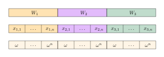
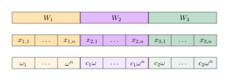

Let $\mathbb F$ denote a field and let $\mathbb F_p$ denote a prime field with $p$ elements.
One of the cornerstones of PLONK is an efficient statistical test for checking if two vectors $(a_1,\ldots,a_m), (b_1,\ldots,b_m)\in\mathbb F_p^m$ are a fixed and specified permutation $\sigma\in\mathcal{S}_m$ of each other, i.e., for checking that $$ \forall i\in\{1,\ldots,m\}: a_{\sigma(i)} = b_i. $$
We use the shorthand notation $\sigma(a) = b$ for this statement. This statistical test implicitly uses the following Lemma.
Lemma.
Let $\mathbb F$ be a field and let $\mathbb F[X,Y]$ be the polynomial ring over $\mathbb F$ in variables $X,Y$. Furthermore, let $a_i,b_i\in\mathbb F$, for $i\in\{1,\ldots,m\}$, and let $\sigma\in S_m$ be a permutation. Then for any pairwise distinct $u_1,\ldots,u_m\in\mathbb F$ we have
$$\prod_{i=1}^m (a_i + u_i X + Y) = \prod_{i=1}^m (b_i + u_{\sigma(i)} X + Y) \Longleftrightarrow \sigma(a)=b.$$
Proof.
Since $\sigma\in S_m$ is a permutation, it holds
$$
\prod_{i=1}^m (a_i + u_i X + Y) = \prod_{i=1}^m (a_{\sigma(i)} + u_{\sigma(i)} X + Y).
$$
The direction “$\Longleftarrow$” is, hence, clear. Indeed, since $a_{\sigma(i)}=b_i$, for all $i\in\{1,\ldots,m\}$, the statement follows immediately. For the direction “$\Longrightarrow$” we consider the following. The ring $\mathbb F[X,Y]$ is a unique factorization domain, and every factor in the products
$$
\prod_{i=1}^m (a_i + u_i X + Y),\; \prod_{i=1}^m (b_i + u_{\sigma(i)} X + Y)
$$
is irreducible. Furthermore, both products are monic in the variable $Y$. Since $u_1,\ldots,u_m$ are pairwise distinct, there is a bijective correspondence between the factors on the left and right side. This correspondence is given by
$$
a_{\sigma(i)} + u_{\sigma(i)} X + Y = b_i + u_{\sigma(i)} X + Y,
$$
for all $i\in\{1,\ldots,m\}$. As a consequence $a_{\sigma(i)}=b_i$, for all $i$. $\qed$
In PLONK, we use above permutation check to prove the correct wiring of gates, i.e., that witness variables are set (or copied) correctly across multiple gates. Let’s say we have in total $m$ witness variables $(w_1,\ldots,w_m)$. Then, we can apply above permutation check lemma with the premise $$ w\coloneqq(w_1,\ldots,w_m)=(a_1,\ldots,a_m)=(b_1,\ldots,b_m) $$ Hence, we are proving that $\sigma(w)=w$.
The equalities between witness variables define an equivalence relation $\equiv$ on the index set $\{1,\ldots, m\}$ as follows: $$ i\equiv j :\Longleftrightarrow w_i=w_j. $$ This equivalence relation $\equiv$ partitions the index set ${{1,\ldots,3n}}$ into a set of disjoint equivalence classes $[i_1]_{\equiv},\ldots,[i_t]_{\equiv}$ with $$ [i]_\equiv\coloneqq \{j\in\{1,\ldots,m\} : j=i \}, $$ and such that $$ \{1,\ldots,m\} = \bigcup_{k=1}^t[i_k]_\equiv $$ We define a permutation $\sigma\in S_m$ based on these equivalence classes as the following product of cycles: $$ \sigma = ([i_1]_\equiv)\cdots([i_t]_\equiv). $$ The ordering of indices within a cycle doesn’t matter. This is also the reason why $\sigma$ is not unique for a given equivalence relation. Cycles of length $1$ are not explicitly written down in the cycle notation.
In other words, two witness variables are equal (i.e., copied) if and only if the corresponding indices belong to the same cycle in $\sigma$. The indices of uncopied variables are left untouched.
Example. Let’s say $m=6$ and it holds $w_1=w_3$. In this case, the permutation $\sigma\in\mathcal{S}_6$ is given by
$$
\sigma = (13).
$$
Assuming that, additionally, it holds $w_3=w_4$, we have
$$
\sigma = (134).
$$
But also the following definition of $\sigma$ encoded the copy constraints correctly:
$$
\sigma = (143).
$$
PLONK represents each column of the execution trace (or gate table) as a polynomial. The evaluation domain to obtain this polynomial representation are the powers $$H\coloneqq\{1, \omega,\omega^2,\ldots,\omega^{n-1}\}$$ of a primitive $n$-th root of unity $\omega$, usually taken from the multiplicative subgroup of the scalar field of an elliptic curve group.
For $n$ (vanilla) PLONK gates, the table layout of the gates consists of $n$ rows (one for each gate) and contains the $3$ witness columns $$ \begin{aligned} W_1 \coloneqq (x_{1,1},\ldots,x_{1,n}),\quad W_2 \coloneqq (x_{2,1},\ldots,x_{2,n}),\quad W_3 \coloneqq (x_{3,1},\ldots,x_{3,n}). \end{aligned} $$ These columns collect the left input, right input, and output of each (vanilla) PLONK gate $$ s_{1,i}\cdot x_{1,i} + s_{2,i}\cdot x_{2,i} + s_{3,i}\cdot x_{3,i} + s_{4,i}\cdot x_{1,i} x_{2,i} + s_{5,i}. $$
Each witness vector $W_i$ is encoded via the polynomial $$ W_i(X)\coloneqq \sum_{j=1}^n\mathcal L_j(X)\cdot x_{i,j} $$ over the evaluation domain ${\omega,\ldots,\omega^n}$. Here, the polynomials $\mathcal L_1(X),\ldots,\mathcal L_n(X)$ are the Lagrange basis polynomials for the $n$-dimensional $\mathbb F_p$-vector of all polynomials of degree at most $n-1$ with the property $$ \mathcal L_j(\omega^k) = \begin{cases} 1, & j=k,\\ 0, & \text{otherwise}. \end{cases}% $$
To prove the correct wiring of the witness vectors $W_1,W_2,W_3$ in PLONK, we concatenate and combine them into a single vector $(W_1,W_2,W_3)$ of length $3n$.1 The goal is to apply the permutation argument to the combined vector $(W_1,W_2,W_3)$.
The next figure illustrates this concatenation and, additionally, lists the evaluation domain of each $S_i$ when represented as a polynomial.
We face the problem that each $W_i$ has the same evaluation domain $\omega,\ldots,\omega^n$. The permutation argument in above lemma, however, requires distinct elements $w_1,\ldots,w_{3n}$.
We, therefore, choose $c_1,c_2\in\mathbb F_p$ such that the sets $$ H \coloneqq \{\omega,\ldots,\omega^n\},\quad c_1H = \{c_1\omega,\ldots,c_1\omega^n\},\quad c_2H = \{c_2\omega,\ldots,c_2\omega^n\}, $$ are pairwise disjunct.2 Now, we have a domain of length $3n$ with truly distinct elements as the following figure depicts.
We define $w=(w_1,\ldots,w_{3n})$ with $$ w_{(i-1)n+j} \coloneqq x_{i,j} = W_i(\omega^j), $$ and $u=(u_1,\ldots,u_{3n})$ with $$ u_{(i-1)n+j} \coloneqq c_i\omega^j, $$ where $i=1,2,3$, $j=1,\ldots,n$, $c_0\coloneqq 1$, and $c_1,c_2$ as above. The vector $w$ contains all $3n$ witness variables and we assume that $\sigma$ encodes all copy constraints (i.e., equalities between variables in $a$).
At this point, we could use the Schwartz-Zippel-DiMello-Lipton Lemma and check if
$$ \prod_{i=1}^{3n}( w_i + u_i\cdot \beta + \gamma) - \prod_{i=1}^{3n} (w_i + u_{\sigma(i)}\cdot\beta + \gamma) = 0 $$ for i.i.d. uniformly random $\beta,\gamma\in\mathbb F_p$. If the check held, with an error probability of at most $\frac{3n}{p}$ we could infer that the two involved polynomials are indeed identical and, hence, $\sigma(w)=w$. However, as we are going to discuss, the permutation check in PLONK doesn’t stop here but reduces above zero check to a vanishing check.3
For this vanishing check, we encode the vector $u$ and its permutation $\sigma(u)$ via, in total, $6$ polynomials over the domain $\{\omega,\ldots,\omega^n\}$: $$ U_{\text{id},i}(X) \coloneqq c_{i-1}X,\quad i=1,2,3, $$ and $$ U_{\sigma,i}(X) \coloneqq \sum_{j=1}^n c_{i-1}\omega^{\sigma(j)}\cdot\mathcal{L}_j(X),\quad i=1,2,3. $$
For notational purposes, we also define the polynomials in $\mathbb F_p[T,X,Y]$ $$ f(T,X,Y)\coloneqq \prod_{i=1}^{3} ( W_i(T) + U_{\text{id},i}(T)\cdot X + Y), $$ and $$ g(T,X,Y)\coloneqq \prod_{i=1}^{3} ( W_i(T) + U_{\sigma,i}(T)\cdot X + Y). $$
This gives us $$ \hspace{-1.3em} \begin{alignat*}{3} &\prod_{i=1}^{3n}( w_i + u_i X + Y) &&= \prod_{i=1}^{3n} (w_i + u_{\sigma(i)} X + Y) \\ \Longleftrightarrow\quad &\prod_{j=1}^n\prod_{i=1}^{3} ( x_{i,j} + c_{i-1}\omega^j X + Y) &&= \prod_{j=1}^n\prod_{i=1}^{3} (x_{i,j} + c_{i-1}\omega^{\sigma(j)} X + Y)\\ \Longleftrightarrow\quad &\prod_{j=1}^n \underbrace{\prod_{i=1}^{3} ( W_i(\omega^j) + U_{\text{id},i}(\omega^j) X + Y)}_{= f(\omega^j,X,Y)} &&= \prod_{j=1}^n \underbrace{\prod_{i=1}^{3} (W_i(\omega^j) + U_{\sigma,i}(\omega^j) X + Y)}_{=g(\omega^j,X,Y)}\\ \Longleftrightarrow\quad &\prod_{j=1}^n f(\omega^j,X,Y) &&= \prod_{j=1}^n g(\omega^j,X,Y)\\ \stackrel{w.h.c.}{\Longleftrightarrow}\quad &\prod_{j=1}^n f(\omega^j,\beta,\gamma) &&= \prod_{j=1}^n g(\omega^j,\beta,\gamma)\quad{ \small(\text{for random $\beta,\gamma\in\mathbb F_p$})}\\ \Longleftrightarrow\quad &\frac{\prod_{j=1}^n f(\omega^j,\beta,\gamma)}{\prod_{j=1}^n g(\omega^j,\beta,\gamma)} &&= 1\quad{ \small(\text{assuming that }g(\omega^j,\beta,\gamma)\neq 0,\forall j)}. % \label{eq:inverse-check}\Longleftrightarrow\quad &\frac{\prod_{j=1}^n f(\omega^j,X,Y)}{\prod_{j=1}^n g(\omega^j,X,Y)} &&= 1. \end{alignat*} $$
As a further processing step, the authors of PLONK define the polynomial $\Phi(T)$ in $\mathbb F_p[T]$
$$ \begin{alignat*}{2} &\omega &&\mapsto 1,\\ &\omega^2 &&\mapsto \frac{f(\omega,\beta,\gamma)}{g(\omega,\beta,\gamma)},\\ &\omega^3 &&\mapsto \frac{f(\omega,\beta,\gamma)}{g(\omega,\beta,\gamma)}\cdot \frac{f(\omega^2,\beta,\gamma)}{g(\omega^2,\beta,\gamma)},\\ 1 = \;&\omega^n &&\mapsto \frac{f(\omega,\beta,\gamma)}{g(\omega,\beta,\gamma)}\cdot\ldots\cdot \frac{f(\omega^{n-1},\beta,\gamma)}{g(\omega^{n-1},\beta,\gamma)}.\\ \end{alignat*} $$ If $\mathcal L_1(T),\ldots, \mathcal L_n(T)$ denote the Lagrange basis given by $$ \mathcal L_i(T)\coloneqq \prod_{j=1,\ldots,n:\;j\neq i} \frac{T-\omega^j}{\omega^i-\omega^j}, $$ we can write $$ \Phi(T) = \sum_{i=1}^n \mathcal L_i(T)\cdot\prod_{j=1}^{i-1}\frac{f(\omega^j,\beta,\gamma)}{g(\omega^j\beta,\gamma)}\in\mathbb F_p[T]. $$
Now, above identity4 $$ \frac{\prod_{j=1}^n f(\omega^j,\beta,\gamma)}{\prod_{j=1}^n g(\omega^j,\beta,\gamma)} = 1 $$ is equivalent to the proposition that for all $a\in H$ it holds
- $\mathcal L_1(a)\cdot (\Phi(a)-1)=0$,
- $\Phi(a)\cdot f(a,\beta,\gamma) - \Phi(\omega a)\cdot g(a,\beta,\gamma)=0$.
This proposition is, in turn, equivalent to
- $\mathcal L_1(T)\cdot(\Phi(T)-1) = Q_1(T)\cdot Z_H(T)$,
- $\Phi(T)\cdot f(T,\beta,\gamma) - \Phi(\omega T)\cdot g(T,\beta,\gamma) = Q_2(T)\cdot Z_H(T)$,
for certain $Q_1,Q_2\in\mathbb F_p[T]$ and $$ Z_H(T)\coloneqq T^n-1 = \prod_{a\in H}(T-a)\in\mathbb F_p[T]. $$
For notational purposes, let’s introduce $$ C_1(T)\coloneqq \mathcal L_1(T)\cdot(\Phi(T)-1) - Q_1(T)\cdot Z_H(T), $$ and $$ C_2(T)\coloneqq \Phi(T)\cdot f(T,\beta,\gamma) - \Phi(\omega T)\cdot g(T,\beta,\gamma) - Q_2(T)\cdot Z_H(T). $$
Checking the copy constraints in PLONK involves the following chain of equivalent identities: $$ \begin{alignat*}{2} & \sigma(w) = w \\ &\stackrel{w.h.c.}{\Longleftrightarrow} \frac{\prod_{j=1}^n f(\omega^j,\beta,\gamma)}{\prod_{j=1}^n g(\omega^j,\beta,\gamma)} = 1{\small\quad(\text{for random $\beta,\gamma\in\mathbb F_p\wedge g(\omega^j,\beta,\gamma)\neq 0, \forall j$})}\\ &\Longleftrightarrow C_1(T) = C_2(T) = 0 \end{alignat*} $$ In practice, PLONK uses the last expressions (or $H$-ranged identities) to prove the copy constraints (i.e., the correct wiring of witness variables across multiple gates).
-
By writing $(W_1,W_2,W_3)$ we slightly abuse notation here. ↩︎
-
This is possible. Pick any $c_1\notin H$ and, then, any $c_2\notin H\cup c_1H$. ↩︎
-
The authors of PLONK call this a ranged polynomial protocol. ↩︎
-
Again, we emphasize the condition that $g(\omega^j,\beta,\gamma)\neq 0$. In particular, the PLONK paper, assumes that $g(\omega^j,\beta,\gamma)\neq 0$ for randomly chosen elements $\beta,\gamma\in\mathbb F_p$. With high probability this will be the case. If not, the protocol is aborted, which introduces a negligible completeness error. In other words, PLONK is not perfectly complete, but (only) statistically complete. ↩︎